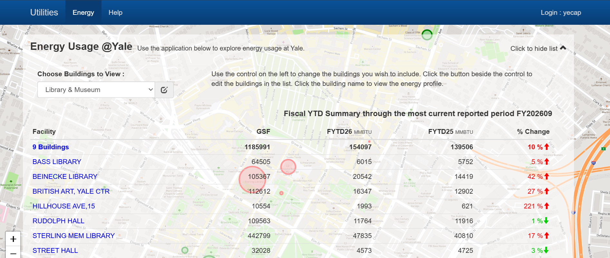
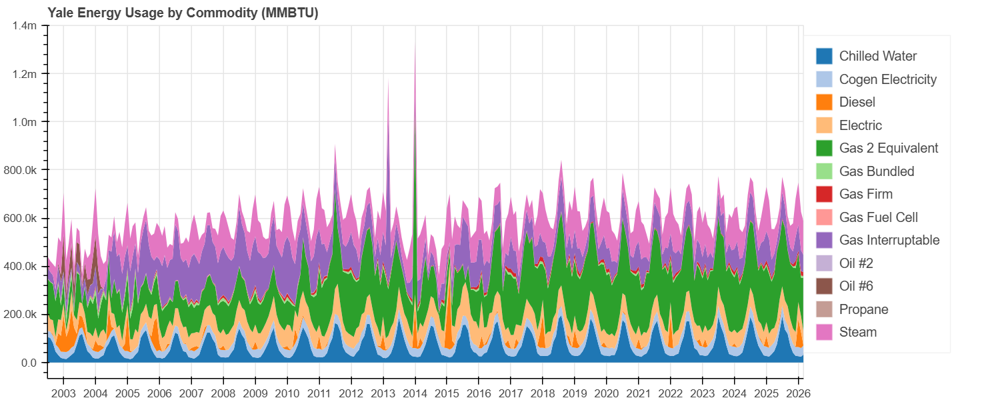
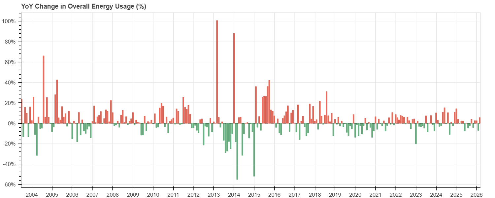
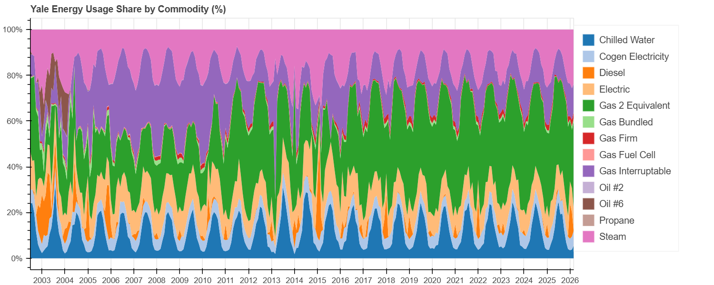
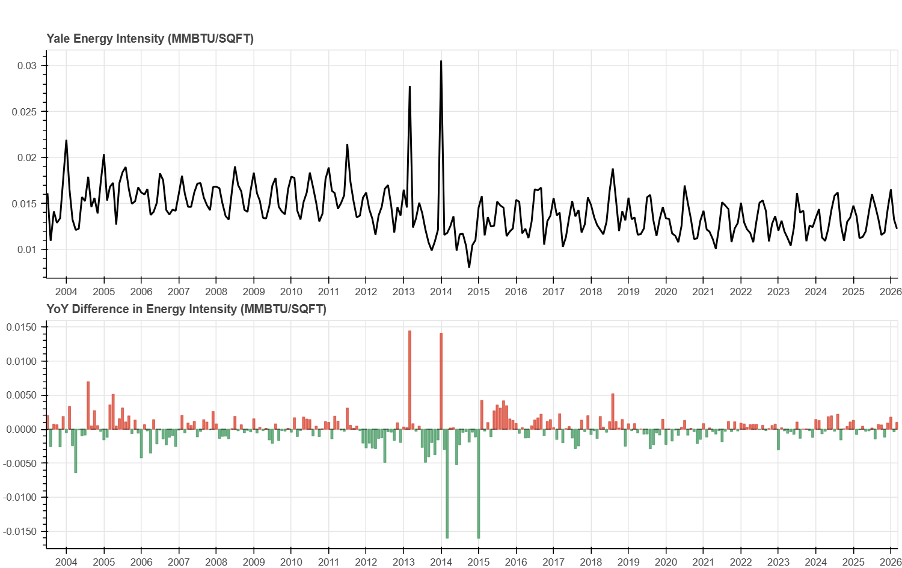
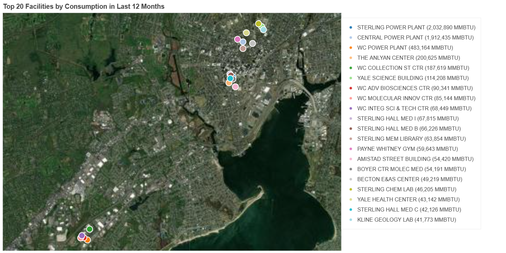

I originally planned to reserve these write-ups for bigger, more fleshed-out projects. Turns out those take a while, and grinding on the same thing for too long can become a bit much. So here's something in the meantime.
I was poking around the web for project ideas and came across Yale's Facility Energy Usage Explorer tool. The site is a bit outdated, clunky to use, and only lets you export monthly data from July 2020 onwards, but the underlying information was quite unique and I couldn't find a clean, structured dataset aggregating it either on Kaggle or GitHub.

Inspecting the fetch/XHR network requests revealed a few hidden endpoints which included params for filtering on date ranges. This allowed me to get monthly energy consumption data by commodity for various buildings on campus starting from July 2002 (an extra 18 years of history) along with some metadata on each facility like coordinates and building type.
As hinted at in the post description, I had been meaning to explore DuckDB and Bokeh in general for data analysis and visualization. You can find some of the plots I made below:





Overall, I found bokeh to be pretty clean and flexible, but I definitely had to vibecode
quite a bit having used matplotlib, seaborn, and plotly all these
years. I'm not sure if it's convinced me to make the switch, but then again I barely scratched the
surface in this mini exploration. On the other hand, I found duckdb to be super intuitive
to use and it just felt natural to query my CSVs directly using SQL, so I will definitely try to use it
in future projects.
As always, the raw and cleaned data as well as my slop code can be found on my GitHub.